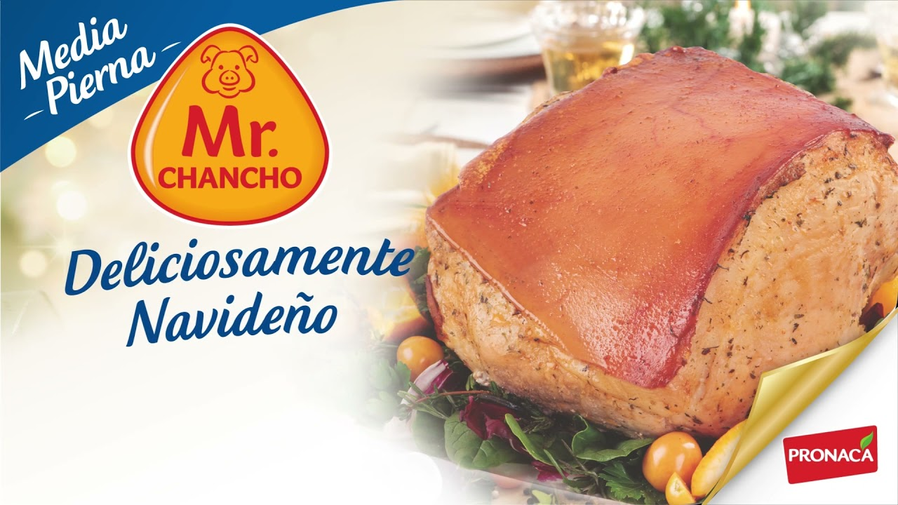
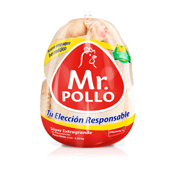

En Tmark, nos enorgullece presentar una amplia gama de productos de alta calidad,
cuidadosamente seleccionados para satisfacer todos los gustos y estilos de vida. Desde productos frescos
y locales hasta artículos exclusivos de diseñadores emergentes, nuestro mercado es un escaparate diverso
que refleja la riqueza y la creatividad de nuestra comunidad.
Verduras
En nuestro mercado, ofrecemos una selección excepcional de verduras frescas, cultivadas con amor
y cuidado para brindarte la esencia misma de la naturaleza en cada bocado. En Tmark, creemos en
la calidad y la frescura como pilares fundamentales para una alimentación saludable y deliciosa.

Mr.Chancho
En Tmark, nos enorgullece presentar nuestra selección de carne de cerdo, una experiencia
culinaria que redefinirá tus expectativas. Nuestra carne de cerdo se destaca por su calidad
premium, proveniente de fuentes confiables como lo es la marca Mr.Chancho que es reconocida por
tener los más altos estándares de bienestar
animal.

Mr.Pollo
La carne de pollo en Tmark es sinónimo de frescura, ternura y sabor auténtico debido a que
trabajamos con la marca reconocida a nivel nacional Mr.Pollo. Cada pieza es
cuidadosamente inspeccionada para garantizar la calidad premium que caracteriza nuestra oferta.
Desde pechugas jugosas hasta muslos suculentos, te invitamos a descubrir la versatilidad y
delicioso sabor que solo el pollo fresco de Tmark puede ofrecer.